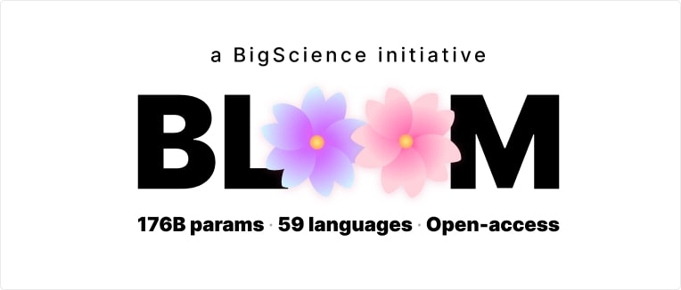

Hugging Face: What you need to know!
When working on a Machine Learning project, the ability to reuse and improve existing models can drastically shorten development cycles and lead to higher performance solutions much faster. Rather than starting from scratch, modern practitioners often rely on pre-trained models—AI systems that have already been trained on massive datasets and are ready to be fine-tuned for specific tasks. This approach is not only beneficial for data scientists but also for businesses, as it reduces computational costs, saves time, and lowers the entry barrier into AI innovation. One company has become a global leader in democratizing this paradigm: Hugging Face. Originally a French startup, Hugging Face has transformed into the “GitHub of Machine Learning,” providing open-source tools, pre-trained models, and a collaborative hub that now powers thousands of research projects and industrial applications around the world. In this article, we will explore Hugging Face, its history, products, strengths, limitations, and how it is shaping the future of AI.
- Hugging Face: What is it? -
Hugging Face began in 2016 as a quirky chatbot company aimed at creating fun digital companions. However, it quickly pivoted when its team realized the true value wasn’t in the chatbots themselves but in the powerful NLP technology they were building to support them. That pivot led to the release of one of the most influential open-source libraries in AI: Transformers. Since then, Hugging Face has positioned itself at the heart of the AI ecosystem, offering:
- A massive hub of pre-trained models — everything from text generation (e.g., GPT-2, GPT-Neo) to computer vision, speech recognition, and multimodal AI.
- Developer tools and libraries — such as Transformers, Datasets, Tokenizers, and Accelerate.
- An open collaboration platform — the Hugging Face Hub, where researchers and companies share models, datasets, and training scripts.
Hugging Face’s mission is simple yet ambitious: “Democratize good machine learning.” Its tools allow anyone—from a solo developer to a Fortune 500 company—to experiment, fine-tune, and deploy cutting-edge AI models without needing a Google-sized infrastructure budget.
- Historical Background and Growth -
Founded in Paris by Victor Sanh, Thomas Wolf, and Clément Delangue, Hugging Face started as an AI-driven social chatbot app. The idea was playful: create “the first AI friend.” But the infrastructure needed for such a chatbot—deep language models, contextual embeddings, fine-tuning pipelines—proved far more valuable than the app itself. By 2018, Hugging Face released the Transformers library, which packaged state-of-the-art NLP architectures like BERT, GPT, and RoBERTa into a simple Python API. This instantly changed the field: tasks that once required weeks of research engineering could now be achieved with just a few lines of code:
from transformers import pipeline
# Sentiment analysis in just 2 lines
classifier = pipeline("sentiment-analysis")
print(classifier("Hugging Face makes NLP so easy!"))
This simplicity, combined with robust performance, made Hugging Face explode in popularity. By 2020, it was already considered the central hub for NLP research. In 2021, Hugging Face raised $100 million in funding and expanded into areas like computer vision, reinforcement learning, and speech AI.
- Hugging Face Products -
+ Chatbots
The early Hugging Face products included experimental chatbot applications such as Chatty, Talking Dog, Talking Egg, and Boloss. These weren’t commercial hits, but they served as a testing ground for advanced natural language processing models. The learnings from these experiments directly influenced the creation of the Transformers library.
+ Transformers Library
Arguably Hugging Face’s crown jewel, the Transformers library provides implementations of dozens of model architectures:
- BERT – for sentence classification and embeddings
- GPT-2 and GPT-Neo – for text generation
- T5 – for text-to-text tasks like summarization and translation
- RoBERTa – a robustly optimized BERT variant
- DistilBERT – lightweight, faster models for production
These models are available with pre-trained weights, meaning you can apply them immediately to NLP tasks like sentiment analysis, summarization, question answering, and named entity recognition.
from transformers import pipeline
summarizer = pipeline("summarization")
text = """Hugging Face has become the central platform for AI model sharing,
transforming the landscape of machine learning with open-source collaboration."""
print(summarizer(text, max_length=30, min_length=10, do_sample=False))
+ Datasets
The Datasets library offers instant access to hundreds of benchmark datasets like SQuAD, IMDB, and Common Crawl. This standardization has accelerated AI research by allowing easy experimentation without reinventing dataset pipelines.
+ Tokenizers
The Tokenizers library provides ultra-fast tokenization in over 40 languages. Built with Rust under the hood, it can handle billions of tokens efficiently—essential for training and deploying large models.
+ Accelerate
Accelerate abstracts away the complexities of distributed training. With just a few configuration lines, you can run the same code on a laptop GPU, a multi-GPU server, or even TPUs. This flexibility empowers both hobbyists and large research labs.
+ BLOOM
BLOOM is one of Hugging Face’s flagship projects: a multilingual large language model with 176 billion parameters, trained collaboratively by over 1,000 researchers. Unlike proprietary models like GPT-3, BLOOM is fully open-source, capable of generating coherent text in 46 languages and 13 programming languages.
+ NLP Training and Education
To help democratize AI, Hugging Face offers free courses on NLP, deep learning, and transformer models. These training modules combine theory with hands-on practice, making them invaluable for students, researchers, and professionals entering the field.
- Use Cases of Hugging Face -
Hugging Face isn’t just for researchers—it has penetrated industries:
- Healthcare – analyzing clinical notes, accelerating drug discovery, medical chatbot assistants
- Finance – automating compliance reports, analyzing contracts, detecting fraud
- Education – personalized tutors, automated grading, language translation
- Legal – document summarization, case law search
- E-commerce – smarter search engines, product recommendation, customer service bots
- Limitations and Challenges -
While Hugging Face has revolutionized ML, it faces some challenges:
- Not all models are production-ready; some lack benchmarks or optimization.
- Documentation can be overwhelming for beginners.
- Bias and fairness: pre-trained models often inherit biases from their training data.
- Environmental cost: training BLOOM required significant compute power, raising sustainability concerns.
- Alternatives to Hugging Face -
Hugging Face isn’t the only player in AI tooling. Alternatives include:
- TensorFlow Hub – Google’s model repository
- PyTorch Hub – for sharing PyTorch models
- Google AutoML – a no-code ML solution
- IBM Watson – enterprise-focused AI
- Microsoft Azure ML – integrated cloud ML platform
- Future of Hugging Face -
Hugging Face’s roadmap suggests even deeper involvement in the AI ecosystem: expanding into multimodal AI (text, vision, audio combined), improving open governance of large models, and pushing for sustainable, ethical AI practices.
In many ways, Hugging Face has already become the “infrastructure of modern AI.” Its platform bridges academia, startups, and enterprises, accelerating innovation while keeping AI open and accessible.
As the AI revolution continues, Hugging Face isn’t just participating—it’s shaping the future of how humans and machines collaborate.